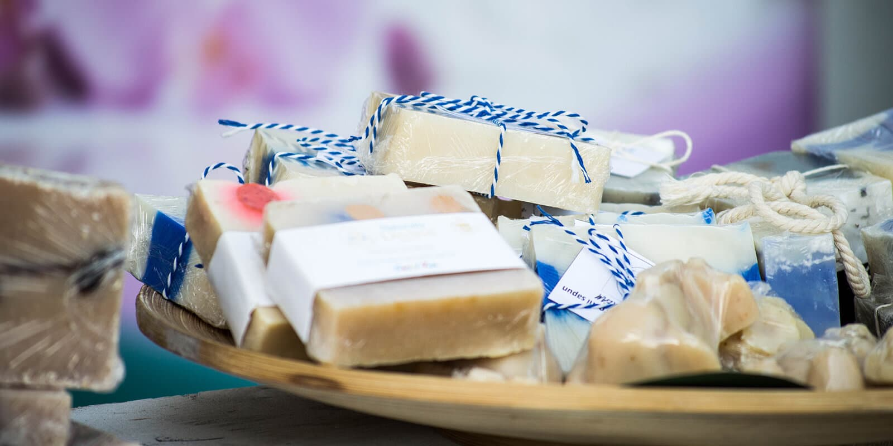

Далеко не все знают, как создается мыло ручной работы (иначе говоря, хенд мейд). Но в этой статье мы посвятим вас в таинство мыловарения, и может кто-то захочет приобщиться к этому искусству.
Как создаются шедевры
Вводный инструктаж

Читать далее